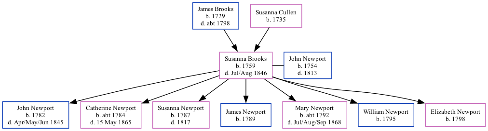

The child of James Brooks and Susanna CullenSusanna Brooks, the 4 times great-grandmother of Nigel Horne, was born in Barham, Kent, England in 17591, was baptized there on Dec 23, 1759 and also married John Newport (with whom she had 7 children: John, Catherine, Susanna, James, Mary, William and Elizabeth) there, on Oct 22, 17803. In 1841, she lived in Sibertswold, Kent, England1.
She died in Jul/aug 1846 in Eastry, Kent, England2 and was buried in Great Hardres, Kent, England on Aug 25, 18463.
1841 England Census Online publication - Provo, UT, USA: The Generations Network, Inc., 2006.Original data - Census Returns of England and Wales, 1841. Kew, Surrey, England: The National Archives of the UK (TNA): Public Record Office (PRO), 1841. Data imaged from the National
Public Member Trees Online publication - Provo, UT, USA: The Generations Network, Inc., 2006.Original data - Family trees submitted by Ancestry members.Original data: Family trees submitted by Ancestry members.
Family Tree

Map
Generated by ged2site. Last updated on Feb 28, 2025